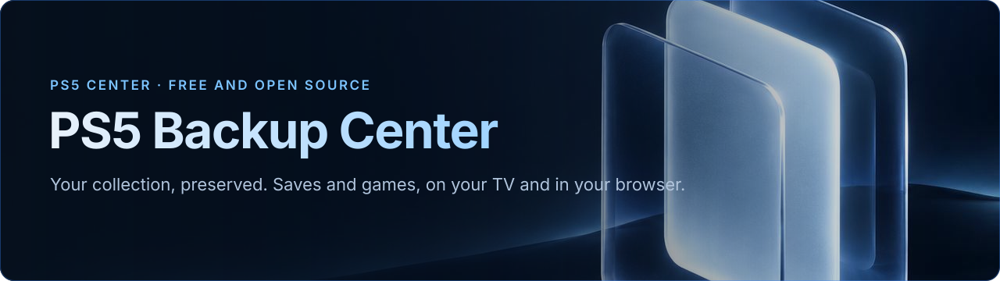

Version 2.86.0 Licence : GPL-3.0-or-later Plateforme : PS5 Langues Compilation C++20
Sauvegarder, comparer et restaurer les parties et les jeux de votre PS5 — et les sauvegardes Switch et d'émulateurs autour.
Un moteur sur la console, une app télé à la manette, la même interface dans n'importe quel navigateur. Sans PC, sans autre outil, sans autre port.
Installer · Fonctions · Comment ça marche · Compatibilité · Feuille de route · FAQ · English

Votre collection. Vos parties. Vous gardez la main.
PS5 Backup Center réunit jeux, applications, ROMs et sauvegardes : sauvegardez, comparez, restaurez, transférez et synchronisez depuis la télé ou le navigateur. Un logiciel libre, sans abonnement.
Pourquoi
Une sauvegarde PS5 vit à un seul endroit, sur un seul compte, sur une seule console. Celles des émulateurs sont dispersées dans une douzaine de dossiers. Celles de la Switch sont sur un autre appareil, derrière JKSV. On découvre souvent qu'on n'avait pas de copie le jour où on en a besoin.
PS5 Backup Center en garde une copie datée et vérifiée — sur une clé USB, sur votre NAS ou sur une autre console — et permet de remettre n'importe quelle version. Il lit ce que contient une sauvegarde : il sait dire quelles copies sont vraiment différentes et lesquelles sont des doublons.
Il fait partie de PS5 Center, une petite famille d'outils libres et gratuits construits sur le même moteur.
[!NOTE] État : avant-première. L'app sert tous les jours sur la console du développeur. Tout ce qui est marqué Disponible fonctionne aujourd'hui ; ce qui est marqué Prévu n'est pas encore dans l'app. Les versions publiques commencent avec ce dépôt GitHub et la fiche ProsperoStore.
Fonctions
Sauvegardes
|
Des backups qu'on gère
|
Deux PS5 qui travaillent ensemble
|
Synchro
|
Jeux et transferts
|
Bibliothèque, appareils, interface
|
Le centre de notifications, directement dans l’Accueil
L’Accueil propose jeux à sauvegarder, copies plus récentes, doublons, comparaisons et vérifications, synchronisation et tâches en cours. Ouvrez une carte pour examiner le contenu concerné puis suivez le résultat dans Tâches. Descendez aussi vers jeux récents, parties sans jeu installé, plateformes rétro et applications.
Découvrir l’Accueil et ses notifications.
Les neuf espaces
- Accueil — Notifications, jeux récents et contenus disponibles ailleurs.
- Bibliothèque — Jeux, applications et ROMs ; filtres, recherche et fiches.
- Parties — Parties actives sur la console, par joueur.
- Sauvegardes — Copies rangées, versions, comparaison et nettoyage.
- Synchro — Copies, parties actives, applis, réglages et inventaire des DLC.
- Transferts — Jeux entiers, copie, déplacement et outils d’images.
- Appareils — Disques, NAS, Switch et PS5 associées.
- Tâches — File, opérations en cours, rapports et plans.
- Paramètres — Langues, thèmes, sources, utilisateurs, mises à jour et crédits.
Captures
Le jeu actuel, les actions proposées et les titres récents.

Filtrez la collection par contenu, émulateur et emplacement dans le navigateur.
Comment ça marche
┌──────────────────────────── PS5 ───────────────────────────────┐
App télé ─►│ Moteur (payload, continue quand l'app est fermée) │◄─── Navigateur
(PPSA99950) │ ├─ Catalogue : jeux, applis, ROM, sauvegardes (cache disque) │ téléphone / PC
│ ├─ Plans, destinations, journal des tâches (reprise) │ port 52370
│ ├─ Copie / restauration (un seul chemin, vérifié) │
│ ├─ Chiffrement et montage des sauvegardes (cœur Garlic) │
│ ├─ Images de jeux (.ffpfsc / .exfat — cœur Game Compressor) │
│ └─ Connecteurs : USB · FTP/FTPS · Switch (ftpd) · HTTPS │
└───────────────────┬────────────────────────┬────────────────────┘
▼ ▼
Disques USB (index témoin) NAS · Switch · autre console
- Le moteur est le serveur. Il sert l'API et les pages web sur un port fixe (52370). L'app télé n'est qu'un client, comme le navigateur : la fermer n'arrête ni le web ni une sauvegarde en cours.
- Aucun outil externe. Le chiffrement et le montage des sauvegardes (Garlic SaveMgr / garlic-worker) et les images de jeux (PS5 Game Compressor) sont compilés dans le moteur. Rien d'autre à lancer, aucun autre port à ouvrir.
- Sources détectées, jamais codées en dur. Les émulateurs sont décrits comme des données ; leurs propres fichiers de réglages disent où sont les jeux. Un émulateur qu'on vient d'installer apparaît au scan suivant.
- Tout laisse une trace sur disque. Les tâches et leur progression sont journalisées : une sauvegarde interrompue reprend.
Releases
Paquets pour la revue locale. Il faut une PS5 compatible homebrew avec un chargeur ELF. Payload Manager est facultatif pour le démarrage avec la console.
Installer
[!IMPORTANT] PS5 Backup Center est un homebrew. Il faut une PS5 qui fait déjà tourner des applications homebrew et des payloads. Ce projet ne fournit, ne documente et ne prend en charge aucun moyen d'y arriver.
Par ProsperoStore — prévu
Dès la première version publique, PS5 Backup Center (PPSA99950) sera proposé au catalogue communautaire ps5-homebrew-catalog qu'utilise ProsperoStore. Les mises à jour suivront ensuite chaque version GitHub.
Installation manuelle — avec la première version publique
- Ouvrez Releases pour vérifier la disponibilité du paquet. Quand PPSA99950.zip est disponible, comparez son empreinte SHA-256 à celle de SHA256SUMS, puis décompressez-le.
- Copiez le dossier
PPSA99950dans le dossier homebrew de la console et inscrivez-le avec votre installateur habituel. - Lancez PS5 Backup Center depuis l’accueil. Un chargeur ELF compatible permet à l’application de démarrer son moteur. Payload Manager est facultatif pour démarrer le moteur avec la console.
- Sur un téléphone ou un ordinateur du même réseau, ouvrez
http://<ip-de-la-ps5>:52370et entrez le code à 6 chiffres affiché dans Paramètres › Appareils.
Mises à jour
Paramètres › Mises à jour vérifie, télécharge seulement les fichiers modifiés, les contrôle, puis redémarre le moteur et/ou l'app avec un compte à rebours. En cas d'échec, l'ancienne version est remise. Fonctionne aussi sans réseau, depuis une clé USB.
Compatibilité
| Domaine | État | Précisions |
|---|---|---|
| PS5 | ✅ Disponible | Environnement homebrew natif compatible requis ; la compatibilité dépend de la console, du format et du titre. L'app ne modifie pas le système. |
| Sauvegardes PS5 | ✅ Disponible | Sauvegarde, restauration vérifiée, vers un autre compte avec confirmation, comparaison par le contenu. |
Jeux PS5 (installé, .ffpfsc, .exfat, dossier) |
✅ Disponible | Copier / déplacer interne ↔ USB, outils d'image. Un jeu en cours n'est jamais touché. |
| Jeux et sauvegardes PS4 sur PS5 | ✅ Listés et sauvegardés | Filtre PS4 dans la Bibliothèque. |
| Sauvegarde complète de la PS5 | Sauvegarde · Restauration prévue | Restaurer, et vers une autre PS5 : feuille de route. |
| Switch (réseau) | ✅ Disponible | ftpd sur la Switch + sauvegardes JKSV. Synchro Switch ↔ Eden / ProsperoEden, profil par profil. |
| Switch en USB (Hekate UMS) | Prévu | Mode stockage de masse via Hekate ; le MTP (haze, DBI) n'est pas lisible par la PS5. |
| NAS / FTP | ✅ Disponible | Synology, QNAP, tout serveur FTP. FTPS (TLS explicite) quand il est proposé ; certificats auto-signés du réseau local acceptés, empreinte notée. |
| SFTP · SMB · NFS · rsync · WebDAV · cloud | 🗓 Prévu | Dans cet ordre (SFTP d'abord). |
| Disques USB | ✅ Disponible | Reconnus par leur index témoin, même s'ils changent de port. |
Émulateurs
D'après le catalogue du moteur (engine2/src/scan/emulators_catalog.cpp) — ROM, sauvegardes, états et jaquettes, réglables à la main dans Paramètres › Sources et émulateurs. Un émulateur inconnu est détecté quand son dossier contient roms, saves, states…
| Émulateur | Plateforme | Émulateur | Plateforme |
|---|---|---|---|
| ProsperoEden / Eden | Switch | Snes9x | Super Nintendo |
| PS5SX2 | PlayStation 2 | Beetle PCE | PC Engine |
| SwanStation | PlayStation | FBNeo | Arcade |
| PSXS5 | PlayStation | Stella | Atari 2600 |
| PSP5 | PSP | PS64 | Commodore 64 |
| Mupen64Plus | Nintendo 64 | PSFlyCast | Dreamcast |
| Genesis Plus GX | Mega Drive / Master System / Game Gear / Mega-CD | Porpoise | GameCube / Wii |
| PS5X360 | Xbox 360 | PS5-ECAM | Wii U · 3DS · DS |
Technique
| Couche | Technologie |
|---|---|
| Moteur | C++20, PS5 Payload SDK, LLVM/Clang. Payload en arrière-plan ; API HTTP /api/v2/… et web statique sur le port 52370. |
| App télé | App PS5 native en C++20 (PPSA99950), sur la base de ps5-native-app-boilerplate ; rendu maison, police Inter. |
| Web | JavaScript, HTML et CSS sans framework ni étape de build, servis par le moteur. |
| Sauvegardes | Cœur de Garlic SaveMgr / garlic-worker (chiffrement, montage, re-signature PS4/PS5) compilé dedans. |
| Images de jeux | Cœur de PS5 Game Compressor (.ffpfsc, .exfat, validation / réparation) compilé dedans. |
| Réseau | BearSSL (HTTPS, FTPS), client FTP maison (MLSD, passif, reprise de session TLS). |
| Images | libwebp, stb_image, zlib. |
| Compilation | Reproductible : deux compilations depuis zéro donnent le même moteur, octet pour octet. |
Feuille de route
En développement : connexion SMB pour les partages Windows, Synology et QNAP.
À venir : SFTP ; corbeille pour les copies du NAS ; mises à jour de toutes les consoles depuis une seule ; installation des DLC PS5 ; passerelles Orbit / PatchDL ; rangement, compression, déplacement et installation des jeux arrivés par Orbit ou BlackBox ; Switch ↔ Switch ; synchronisation automatique ; restauration complète guidée.
Famille de produits : PS4 Backup Center et PS5 Center sont des projets futurs. PS5 Center vise une gestion plus large des consoles, des jeux et des interactions entre appareils. PS5 Connector est un concept futur d’extension des capacités par des connecteurs. Leur périmètre sera précisé séparément.
Les 19 langues, huit thèmes, sons et musique font déjà partie de PS5 Backup Center.
Remerciements et licences
PS5 Backup Center est un logiciel libre sous GPL-3.0-or-later. Il repose sur le travail de ces projets — merci. La même liste est dans l'app, Paramètres › Remerciements.
| Projet | Auteur | Licence | Rôle |
|---|---|---|---|
| ps5-native-app-boilerplate | BlackBearReloaded | GPL-3.0-or-later | Base de l'app télé ; musique « Night Drive » |
| PS5 Payload SDK | ps5-payload-dev (John Törnblom et contributeurs) | GPL-3.0 | Bibliothèques, en-têtes, chaîne de compilation |
| SharpProspero | SvenGDK | GPL-3.0 | Conversion ELF et signature |
| garlic-worker | earthonion (merci à c0w-ar, hzhreal, Team-Alua) | GPL-3.0 | Chiffrement, déchiffrement, re-signature des sauvegardes PS4/PS5 |
| Garlic SaveMgr | earthonion | GPL-3.0 | Import, montage et export des sauvegardes PS5 |
| PS5 Game Compressor | juma-sayeh | GPL-3.0 | Compression, déplacement et validation des jeux |
| BearSSL | Thomas Pornin | MIT | HTTPS et FTPS |
| libwebp | BSD-3-Clause | Jaquettes WebP | |
| zlib | Jean-loup Gailly, Mark Adler | zlib | Compression des vignettes |
| stb_image | Sean Barrett | MIT / domaine public | Lecture des jaquettes |
| Inter | Rasmus Andersson | SIL OFL 1.1 | Police de l'interface |
| LLVM / Clang | LLVM Project | Apache-2.0 avec exceptions LLVM | Compilateur |
| titledb | blawar et contributeurs | Données publiques | Noms des jeux Switch |
| PlayStation-Titles | andshrew | MIT | Noms des jeux PS4 / PS5 |
| Prospero Patches / Orbis Patches | prosperopatches.com, orbispatches.com | Service public | Icônes officielles des jeux PS5 / PS4 sans le jeu |
| tinfoil.media | Tinfoil | Service public | Icônes des jeux Switch absents de la bibliothèque |
Merci aussi à Elf-Arsenal+ (chargeur de payloads), PS5 Payload Manager d'itsPLK, ShadowMount+ de drakmor, Orbit et BlackBox (ergonomie et mises à jour), et Prospero Manager (référence pour les sauvegardes et les comptes).
Contribuer
Le plus utile aujourd'hui : signaler un bug, traduire, et dire sur quel matériel ça marche. Lisez CONTRIBUTING.md, puis ouvrez un ticket. Pour un problème de sécurité, voir SECURITY.md — pas de ticket public.
Questions fréquentes
Peut-il effacer ou abîmer mes sauvegardes ou mes jeux ?
Une restauration est vérifiée d'abord et fait une copie de sécurité de la sauvegarde actuelle. Supprimer demande toujours confirmation, ne retire jamais une version protégée, et cocher les doublons garde toujours une copie de chaque contenu. Un jeu déplacé n'est effacé qu'après relecture et vérification de la copie. Un jeu en cours n'est jamais touché.
Faut-il un PC ou un autre homebrew lancé à côté ?
Non. Le moteur tourne sur la PS5 ; l'app télé et le web lui parlent. Le code de Garlic et de Game Compressor est intégré : ni l'un ni l'autre n'a besoin de tourner.
Peut-on remettre une sauvegarde sur un autre compte ou une autre console ?
Oui sur un autre compte de la même PS5, avec une confirmation explicite. Remettre une sauvegarde complète sur une autre PS5 est prévu.
Mon NAS a déjà des backups faits par un script. Je les perds ?
Non. Les dossiers datés existants sont lus comme des versions et peuvent être restaurés. Ranger sous PBC Backup ne fait que renommer ; si un dossier existe des deux côtés, il fusionne date par date sans rien écraser.
La Switch en USB ?
Pas encore. Aujourd'hui la Switch passe par le réseau (ftpd + JKSV). L'USB via le mode stockage de masse de Hekate est prévu ; le MTP (haze, DBI) n'est pas lisible par la PS5.
C'est vraiment gratuit ?
Oui, et libre (GPL-3.0-or-later). Un lien « paye-moi un café » sera ajouté pour qui veut soutenir le travail ; rien n'est réservé aux donateurs.
Historique des versions
Chaque version et ce qu'elle a apporté : CHANGELOG.md — le même historique que Paramètres › Nouveautés dans l'app.
Soutenir le projet
☕ Paye-moi un café — lien bientôt. Voir .github/FUNDING.yml.
PS5 Backup Center est un projet communautaire indépendant, sans lien avec Sony Interactive Entertainment ni Nintendo, et non approuvé par eux.
« PlayStation », « PS5 », « PS4 » et « Nintendo Switch » sont des marques de leurs propriétaires respectifs.